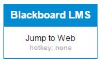
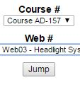
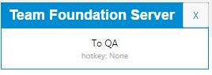
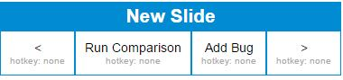

README
Table of Contents
1 Quality Assurance Helper - Chrome Extension
1.1 Introduction
The QA Helper is a tool designed to streamline the process of performing 1:1 Validations between the old and new UTI courseware by minimizing the ill effects of some its biggest pain points. This tool was originally developed in particular for supporting Content QA, but could be expanded upon in the future to aid in other areas of need.
The global usage of its features remains the same, independent of the page that it is run upon:
- A box with buttons will appear in the top-left corner of the page
- This box can be dragged around to any location on the screen that is convenient for the task at hand
- Buttons within the box can be clicked to invoke the help of the tool
1.2 Features by Page
1.2.1 Blackboard

- Jump to Web
NOTE: in order for this button to work properly, you must ensure that you are logged into Blackboard before using it!
Clicking this button will present you with a dialog containing two dropdown boxes and a button labeled 'Jump'.

- The Course Dropdown
- This dropdown box will contain a list of all the courses QA Helper has learned about.
- The Web Dropdown
- When a course is selected in The Course Dropdown, this dropdown box will contain a list of all the webs in the selected course that QA Helper has learned about and can open for you.
- The Jump button
- Click this button after you've selected the appropriate course and web, and it will open the correct web for you in Blackboard and in the DR site!
If QA Helper has not yet learned about a course, it will be unavaiable to navigate to in the dropdown menus.
To teach QA Helper about a new course, simply navigate to the course page in Blackboard that lists all the webs you'd like to teach QA Helper about. As soon as any given course page has finished loading, you should notice that the Course dropdown will then be populated with an additional field representing that course.
1.2.2 TFS - Board View

1.2.3 New Slide

- Next Slide
NOTE: since QA is best done as close to the student experience as possible, it is not recommended that this button is used while doing actual QA work Clicking this button will force the Web to navigate you to the next slide, regardless of the normal constraints that are placed upon navigation for students.
- Run Comparison
NOTE: due to imperfections in the OCR technology that is used as the backbone of this feature, it is considered experimental, and QA results should not depend upon its output NOTE: although they are very high, it is possible that this feature could be throttled due to rate limits.
Clicking this button when both a New Slide and an Old Slide are open at the same time in Google Chrome will trigger a visual programmatic comparison using Optical Character Recognition technology. This basically means the computer will try and read the text on the screen and then compare the results.
Text that the computer flags as "matching" will be marked in green, while text that the computer flags as "not matching" will be marked in red. Since this tool's accuracy entirely depends on the accuracy of the third-party OCR engine that it relies upon, its results are not to be trusted.
- Add Bug
Clicking this button will automatically grab the reference information from the current slide and send it to the nearest tab that is opened to TFS's backlog view. That backlog view will receive the information and use it to find the appropriate Content QA folder on the page and programmatically fill out the basic template for adding a bug, complete with the appropriate tags and initial title name.
- Previous Slide
NOTE: since QA is best done as close to the student experience as possible, it is not recommended that this button is used while doing actual QA work Clicking this button will force the Web to navigate you to the previous slide, regardless of the normal constraints that are placed upon navigation for students.
1.3 Limitations
1.4 Troubleshooting
We need to see if there is any value in upgrading our OCR API access to an increased number of requests per month.